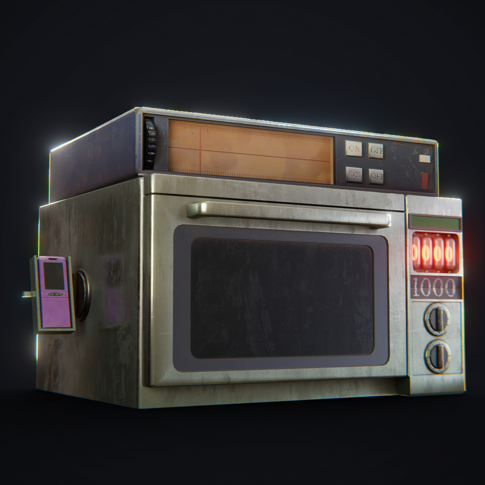

RETURN TO THE LOBBY
RETURN TO THE LOBBY
CREATOR :
The Future Gadget Laboratory
DATE CREATED :
2010
About the Phone-Microwave
The Phone Microwave is an experimental device created by the Future Gadget Laboratory, led by Okabe Rintarou. It is capable of creating stable Kerr black holes, and is used to send emails, known as D-Mails, into the past.

ACTIVATE